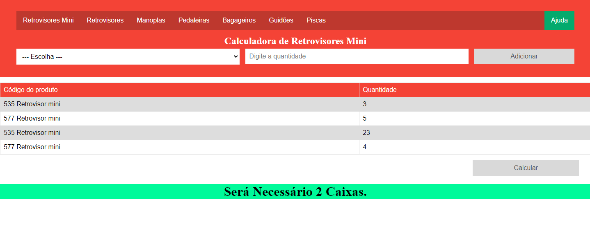

Desde o momento em que me familiarizei com a programação, tenho criado diversos 'Hello World'. Mas brincadeiras à parte, gostaria de compartilhar alguns dos meus projetos:
Calculadora de Arranjo de Caixas em Paletes.

Este projeto foi desenvolvido durante o meu tempo na empresa em que trabalhava. Sua finalidade era calcular automaticamente a quantidade de itens em um pedido e informar ao usuário quantas caixas seriam necessárias para acomodar os produtos. Cada caixa tinha a capacidade de acomodar até 24 unidades de um item específico.
Infelizmente, não estou mais na empresa, e o projeto acabou permanecendo em um estado incompleto, com apenas uma prévia disponível, sem ter sido finalizado.
Cardápio Digital para um Restaurante
Estou atualmente trabalhando na criação de um cardápio digital para um restaurante situado no centro de Araraquara.
Após visitar o estabelecimento, identifiquei que o cardápio digital existente não atendia completamente aos princípios de design de interface do usuário (UI) e experiência do usuário (UX).
Apresentei a proposta a um dos proprietários, e ele imediatamente concordou com a ideia.
Para tornar o Navbar responsivo, precisei adquirir conhecimentos em JavaScript, o que me permitiu implementar essa funcionalidade com sucesso."
Atualmente, estou migrando este projeto para o uso de elementos <div> em vez de utilizar tabelas (<table>), e estou avançando bem com as atualizações. A conclusão está prevista em breve.